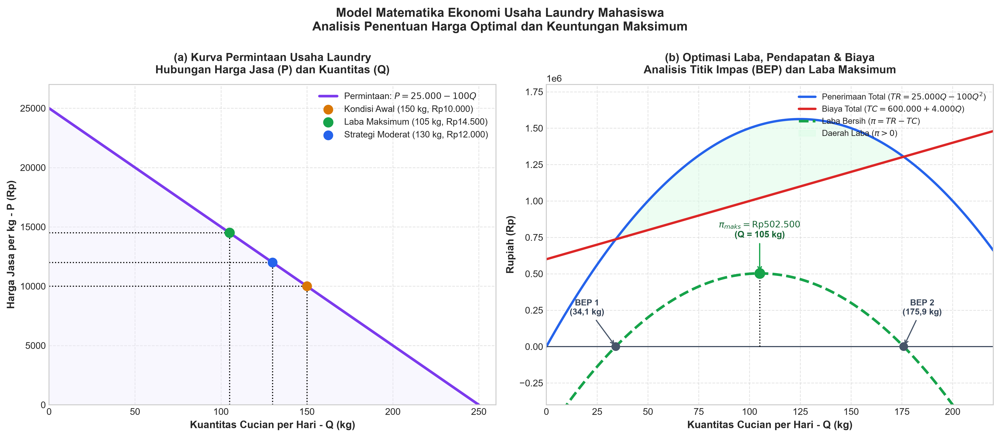

Studi Kasus Optimasi dan Pemodelan Matematika Ekonomi (Usaha Laundry)
Pertemuan 06 · Kamis, 17 September 2026 · Ruang FKIP C.3.1
Dosen Pengampu: Vepi Apiati, S.Pd., M.Pd. • Penyusun: Ryan Wardiana (NIM 232151098)
Integrasi komprehensif konsep fungsi permintaan linear, perumusan biaya total $TC$, fungsi penerimaan total $TR$, fungsi keuntungan kuadratik $\pi$, titik impas (BEP), elastisitas harga, serta pertimbangan strategi penetapan harga bisnis riil.
I. Deskripsi Kasus & Parameter Usaha Laundry
Sebuah usaha laundry mahasiswa menawarkan jasa cuci-kering dengan tarif dan volume operasional awal:
- Harga Awal ($P_0$): $\text{Rp}10.000$ per kg.
- Volume Cucian Awal ($Q_0$): $150\text{ kg}$ per hari.
- Sensitivitas Pasar: Setiap kenaikan harga $\Delta P = \text{Rp}1.000$ per kg, kuantitas cucian berkurang $\Delta Q = 10\text{ kg}$ per hari.
Struktur Biaya Operasional:
- Biaya Tetap (Fixed Cost / $FC$): $\text{Rp}600.000$ per hari (sewa ruko, depresiasi mesin cuci & pengering, gaji pokok operasional).
- Biaya Variabel Rata-rata (Variable Cost / $v$): $\text{Rp}4.000$ per kg cucian (deterjen, pewangi, listrik motor dinamo, air bersih, dan plastik packing).
II. Pemodelan Fungsi Permintaan & Domain Ekonomi
1. Penentuan Kemiringan Kurva (Slope / Gradien)
Gradien fungsi permintaan $m$ dihitung berdasarkan rasio perubahan kuantitas terhadap perubahan harga:
2. Perumusan Persamaan Garis Permintaan
- Menggunakan rumus garis melalui titik $(P_0, Q_0) = (10.000, 150)$: $$Q - Q_0 = m \cdot (P - P_0)$$
- Substitusikan nilai parameter: $$Q - 150 = -0{,}01 \cdot (P - 10.000)$$ $$Q - 150 = -0{,}01P + 100 \implies Q = 250 - 0{,}01P$$
- Bentuk fungsi permintaan invers (harga $P$ sebagai fungsi dari kuantitas $Q$): $$0{,}01P = 250 - Q \implies P = 25.000 - 100Q$$
3. Batasan Domain Kelayakan Ekonomi (Kuadran I)
Dalam realitas bisnis, tingkat harga dan volume cucian tidak boleh bernilai negatif:
- Jika jasa digratiskan ($P = 0$), kapasitas serapan pasar maksimal adalah: $$Q_{\max} = 250 - 0{,}01(0) = 250\text{ kg/hari}$$
- Jika kuantitas cucian turun hingga nol ($Q = 0$), harga tertinggi pemutus permintaan (*choke price*) adalah: $$P_{\max} = 25.000 - 100(0) = \text{Rp}25.000/\text{kg}$$
- Domain Kelayakan Ekonomi: $$0 \le Q \le 250\text{ kg/hari} \quad \text{dan} \quad 0 \le P \le \text{Rp}25.000/\text{kg}$$
III. Pemodelan Biaya Total ($TC$), Penerimaan Total ($TR$), dan Laba Bersih ($\pi$)
A. Fungsi Biaya Total (Total Cost — $TC$)
Biaya total adalah penjumlahan Biaya Tetap ($FC$) dan Biaya Variabel Total ($VC = v \cdot Q$):
Dinyatakan dalam fungsi variabel harga $P$ (substitusi $Q = 250 - 0{,}01P$):
B. Fungsi Penerimaan Total (Total Revenue — $TR$)
Penerimaan total adalah hasil kali harga per satuan $P$ dengan jumlah kuantitas $Q$:
Dinyatakan dalam variabel harga $P$:
C. Fungsi Keuntungan Bersih (Profit — $\pi$)
Laba bersih diperoleh dari selisih antara penerimaan total dan biaya total ($\pi = TR - TC$):
- Fungsi Laba Berbasis Kuantitas $Q$: $$\pi(Q) = (25.000Q - 100Q^2) - (600.000 + 4.000Q) = -100Q^2 + 21.000Q - 600.000$$
- Fungsi Laba Berbasis Tingkat Harga $P$: $$\pi(P) = (250P - 0{,}01P^2) - (1.600.000 - 40P) = -0{,}01P^2 + 290P - 1.600.000$$
Titik Optimal Teoritis (Laba Maksimum Berbasis Kalkulus)
Karena koefisien kuadrat $a = -0{,}01 < 0$, fungsi laba merupakan parabola membuka ke bawah. Syarat perlu ekstremum:
Kuantitas pada titik laba optimal:
Nilai laba maksimum harian teoritis:
IV. Visualisasi Grafik Model Ekonomi
Grafik berikut memvisualisasikan: (a) Kurva permintaan linear $P = 25.000 - 100Q$; (b) Kurva kuadratik penerimaan $TR$, garis linier biaya $TC$, area surplus laba $(\pi > 0)$, serta titik impas (Break-Even Point / BEP).

Gambar 1: Kurva Permintaan, Penerimaan Total (TR), Biaya Total (TC), dan Daerah Keuntungan Usaha Laundry Mahasiswa.
V. Simulasi Multi-Skenario Harga, Elastisitas & Titik Impas (BEP)
Tabel komparasi 5 skenario penetapan harga berdasarkan formulasi model matematika:
| Skenario | Harga ($P$) (Rp/kg) |
Volume ($Q$) (kg/hari) |
Penerimaan ($TR$) (Rp/hari) |
Biaya Total ($TC$) (Rp/hari) |
Laba Bersih ($\pi$) (Rp/hari) |
Margin Laba ($\pi / TR$) |
Karakteristik & Status |
|---|---|---|---|---|---|---|---|
| 1. Kondisi Awal | Rp10.000 | 150 kg | Rp1.500.000 | Rp1.200.000 | Rp300.000 | 20,0% | Baseline |
| 2. Kenaikan Ringan | Rp11.000 | 140 kg | Rp1.540.000 | Rp1.160.000 | Rp380.000 | 24,7% | Konservatif |
| 3. Pertumbuhan Seimbang | Rp12.000 | 130 kg | Rp1.560.000 | Rp1.120.000 | Rp440.000 | 28,2% | Rekomendasi Utama |
| 4. Laba Maks. Teoritis | Rp14.500 | 105 kg | Rp1.522.500 | Rp1.020.000 | Rp502.500 | 33,0% | Kalkulus Murni |
| 5. Premium / Skimming | Rp16.000 | 90 kg | Rp1.440.000 | Rp960.000 | Rp480.000 | 33,3% | Laba Mulai Turun |
Analisis Titik Impas (Break-Even Point / BEP)
Kondisi titik impas terjadi saat $\pi = 0$ atau $TR = TC$:
Dengan rumus kuadratik $P = \frac{-b \pm \sqrt{b^2 - 4ac}}{2a}$ diperoleh:
- Titik Impas Bawah ($P_{\text{BEP1}}$): $\approx \text{Rp}7.411/\text{kg}$ (kuantitas $Q \approx 175{,}9\text{ kg}$). Jika harga di bawah ini, omset tidak mampu menutupi biaya operasional.
- Titik Impas Atas ($P_{\text{BEP2}}$): $\approx \text{Rp}21.589/\text{kg}$ (kuantitas $Q \approx 34{,}1\text{ kg}$). Jika harga di atas ini, volume pelanggan terlalu rendah sehingga biaya tetap tidak tertutupi.
- Zona Profitabilitas: Usaha menghasilkan keuntungan positif bila harga ditetapkan pada interval $\text{Rp}7.411 < P < \text{Rp}21.589$.
VI. Rekomendasi Strategi Penetapan Harga Bisnis Riil
Keputusan Strategis: HARGA MODERAT Rp12.000 PER KG
Meskipun laba puncak teoritis tercapai pada $\text{Rp}14.500$, dalam bisnis kampus riil, menaikkan harga langsung ke $\text{Rp}14.500$ (+45%) sangat berbahaya. Penetapan harga $\text{Rp}12.000/\text{kg}$ (+20%) adalah pilihan paling bijak dengan 4 pertimbangan nyata:
- Lonjakan Laba Bersih yang Signifikan (+46,7%): Laba harian meningkat dari $\text{Rp}300.000$ menjadi $\text{Rp}440.000/\text{hari}$ (tambahan laba bersih $\text{Rp}4.200.000$ per bulan). Selisih keuntungan dengan skenario teoritis hanya $\text{Rp}62.500/\text{hari}$, namun risikonya jauh lebih aman.
- Mitigasi Risiko Kehilangan Pelanggan (Customer Churn): Konsumen mahasiswa memiliki elastisitas silang tinggi terhadap kompetitor. Kenaikan harga Rp2.000 masih dalam toleransi psikologis uang saku, sehingga volume cucian hanya turun tipis dari 150 kg menjadi 130 kg (penurunan hanya 13,3%).
- Utilisasi Kapasitas Mesin Optimal: Volume 130 kg per hari menjaga utilisasi mesin cuci dan pengering tetap pada beban kerja efisien tanpa memaksa mesin bekerja lembur malam.
- Peningkatan Margin Kontribusi: Margin per kg meningkat tajam dari $(10.000 - 4.000) = \text{Rp}6.000/\text{kg}$ menjadi $(12.000 - 4.000) = \text{Rp}8.000/\text{kg}$ (+33,3%), mempercepat titik balik modal harian.
VII. Analisis Kritis: Apakah Harga Tertinggi Selalu Memberikan Laba Tertinggi?
JAWABAN: TIDAK. Harga yang semakin tinggi TIDAK selalu memberikan keuntungan yang lebih tinggi.
Ada dua landasan ilmiah yang membuktikannya:
- Landasan Matematis (Sifat Parabola Kuadrat): Fungsi laba $\pi(P) = -0{,}01P^2 + 290P - 1.600.000$ berkoefisien $a = -0{,}01 < 0$, membentuk parabola membuka ke bawah dengan puncak tunggal di $P = \text{Rp}14.500$. Untuk setiap $P > \text{Rp}14.500$, nilai turunan $\frac{d\pi}{dP} < 0$, artinya setiap kenaikan harga justru memangkas keuntungan bersih.
-
Landasan Ekonomi (Trade-Off Efek Harga vs Efek Volume):
- Efek Harga (Price Effect): Kenaikan harga menaikkan pendapatan per satuan barang.
- Efek Volume (Volume Effect): Kenaikan harga menurunkan kuantitas cucian yang masuk.
Latihan Mandiri
Soal 1 (Simulasi Kebijakan Diskon Promo Mahasiswa):
Jika pemilik laundry mengadakan program promo khusus awal semester dengan memberikan harga promosi $\text{Rp}9.000/\text{kg}$, hitung:
- Jumlah volume cucian yang diharapkan masuk per hari ($Q$).
- Penerimaan total ($TR$) dan Biaya total ($TC$).
- Keuntungan bersih ($\pi$) yang diperoleh. Apakah strategi ini menguntungkan secara ekonomi?
Soal 2 (Pengaruh Kenaikan Biaya Tetap / Sewa Tempat):
Misalkan pemilik ruko menaikkan sewa tempat sehingga Biaya Tetap ($FC$) naik dari $\text{Rp}600.000$ menjadi $\text{Rp}800.000$ per hari, sementara biaya variabel tetap $\text{Rp}4.000/\text{kg}$:
- Apakah tingkat harga optimal teoritis ($P^*$) berubah? Jelaskan alasan matematisnya!
- Berapa keuntungan maksimum baru yang dapat diraih?
- Hitung rentang titik impas (BEP) yang baru!
Soal 3 (Efisiensi Penghematan Biaya Variabel):
Jika pengusaha laundry berhasil menegosiasikan harga deterjen curah sehingga biaya variabel turun dari $\text{Rp}4.000$ menjadi $\text{Rp}3.000/\text{kg}$:
- Tentukan fungsi laba $\pi(P)$ yang baru!
- Hitung harga optimal $P^*$, kuantitas optimal $Q^*$, dan laba maksimum barunya!
Ringkasan
- Fungsi Permintaan: $Q = 250 - 0{,}01P$ atau $P = 25.000 - 100Q$ dengan batas ekonomi $0 \le Q \le 250$ dan $0 \le P \le 25.000$.
- Fungsi Biaya Total: $TC(P) = 1.600.000 - 40P$ atau $TC(Q) = 600.000 + 4.000Q$.
- Fungsi Penerimaan: $TR(P) = 250P - 0{,}01P^2$ dengan puncak penerimaan pada $P = \text{Rp}12.500$.
- Fungsi Laba: $\pi(P) = -0{,}01P^2 + 290P - 1.600.000$ dengan puncak laba matematis pada $P^* = \text{Rp}14.500/\text{kg}$ ($\pi^* = \text{Rp}502.500/\text{hari}$).
- Zona Impas (BEP): $\text{Rp}7.411 < P < \text{Rp}21.589$.
- Keputusan Nyata: Harga terbaik terpilih adalah Rp12.000/kg (laba melonjak +46,7%, volume stabil di 130 kg/hari, meminimalkan risiko kaburnya pelanggan mahasiswa).
- Hukum Ekonomi: Harga setinggi mungkin tidak selalu menghasilkan laba tertinggi karena adanya trade-off antara efek harga positif dan efek penurunan kuantitas negatif.